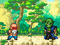
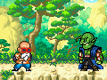

Giới Thiệu
Ngọc Rồng Online là Trò Chơi Trực Tuyến với cốt truyện xoay quanh bộ truyện tranh 7 viên Ngọc Rồng. Người chơi sẽ hóa thân thành một trong những anh hùng của 3 hành tinh: Trái Đất, Xayda, Namếc. Cùng luyện tập, tăng cường sức mạnh và kỹ năng. Đoàn kết cùng chiến đấu chống lại các thế lực hung ác. Cùng nhau tranh tài.
Đặc điểm nổi bật:
- Thể loại hành động, nhập vai. Trực tiếp điều khiển nhân vật hành động. Dễ chơi, dễ điều khiển nhân vật. Đồ họa sắc nét. Có phiên bản đồ họa cao cho điện thoại mạnh và phiên bản pixel cho máy cấu hình thấp.
- Cốt truyện bám sát nguyên tác. Người chơi sẽ gặp tất cả nhân vật từ Bunma, Quy lão kame, Jacky-chun, Tàu Pảy Pảy... cho đến Fide, Pic, Poc, Xên, Broly, đội Bojack.
- Đặc điểm nổi bật nhất: Tham gia đánh doanh trại độc nhãn. Tham gia đại hội võ thuật. Tham gia săn lùng ngọc rồng để mang lại điều ước cho bản thân.
- Tương thích tất cả các dòng máy trên thị trường hiện nay: Máy tính PC, Điện thoại di động Nokia Java, Android, iPhone, Windows Phone, và máy tính bảng Android, iPad.


 

Hướng Dẫn Tân Thủ
1. Đăng kí tài khoản
Ngọc Rồng Online sử dụng Tài Khoản riêng, không chung với bất kỳ Trò Chơi nào khác.
Bạn có thể đăng ký tài khoản miễn phí ngay trong game, hoặc trên trang Diễn Đàn.
Khi đăng ký, bạn nên sử dụng đúng số điện thoại hoặc email thật của mình. Nếu sử dụng thông tin sai, người có số điện thoại hoặc email thật sẽ có thể lấy mật khẩu của bạn.
Số điện thoại và email của bạn sẽ không hiện ra cho người khác thấy. Admin không bao giờ hỏi mật khẩu của bạn.
2. Hướng dẫn điều khiển
Đối với máy bàn phím: Dùng phím mũi tên, phím số, để điều khiển nhân vật. Phím chọn giữa để tương tác.
Đối với máy cảm ứng: Dùng tay chạm vào màn hình cảm ứng để di chuyển. Chạm nhanh 2 lần vào 1 đối tượng để tương tác.
Đối với PC: Dùng chuột, click chuột phải để di chuyển, click chuột trái để chọn, click đôi vào đối tượng để tương tác
3. Một số thông tin căn bản
- Đậu thần dùng để tăng KI và HP ngay lập tức.
- Bạn chỉ mang theo người được 10 hạt đậu. Nếu muốn mang nhiều hơn, hãy xin từ bạn bè trong Bang.
- Tất cả các sách kỹ năng đều có thể học miễn phí tại Quy Lão Kame, khi bạn có đủ điểm tiềm năng.
- Bạn không thể bay, dùng kỹ năng, nếu hết KI.
- Tấn công quái vật cùng bạn bè trong Bang sẽ mang lại nhiều điểm tiềm năng hơn đánh một mình.
- Tập luyện với bạn bè tại khu vực thích hợp sẽ mang lại nhiều điểm tiềm năng hơn đánh quái vật.
- Khi được nâng cấp, đậu thần sẽ phục hồi nhiều HP và KI hơn.
- Vào trò chơi đều đặn mỗi ngày để nhận được Ngọc miễn phí.
- Đùi gà sẽ phục hồi 100% HP, KI. Cà chua phục hồi 100% KI. Cà rốt phục hồi 100% HP.
- Cây đậu thần kết một hạt sau một thời gian, cho dù bạn đang offline.
- Sau 3 ngày không tham gia trò chơi, bạn sẽ bị giảm sức mạnh do lười luyện tập.
- Bạn sẽ giảm thể lực khi đánh quái, nhưng sẽ tăng lại thể lực khi không đánh nữa.
Bạn nên tải phiên bản nào?
Nếu bạn dùng điện thoại Nokia cũ, có bàn phím như Nokia 6300, Nokia E72, Nokia X2, Nokia C2, Hãy tải bản JAVA
Nếu bạn dùng máy cảm ứng sử dụng Android như: Samsung Galaxy Y, HTC, LG, Sky, HKPhone. Hãy tải bản Android APK hoặc Android Playstore đều được.
Nếu bạn dùng điện thoại cảm ứng của NOKIA Lumia, hoặc các máy HTC chạy Windows Phone, hãy tải bản cho Windows Phone.
Nếu bạn dùng máy vi tính cá nhân, laptop chạy Windows XP - Windows 7, hãy tải bản PC.
Nếu bạn dùng iPhone, iPod, iPad, hãy tải bản iPhone Appstore. Nếu bạn biết chắc rằng máy mình đã jailbreak, có cài AppSync hoặc AppstoreVN, hãy cài từ bản iPhone jailbreak để tốc độ nhanh hơn.
Giấy phép thiết lập Mạng Xã Hội trên mạng số: 374/GP-BTTTT
do Bộ Thông Tin và Truyền Thông cấp ngày: 07/08/2015
Bản Quyền thuộc về TeaMobi - 2015 - Điều Khoản Sử Dụng